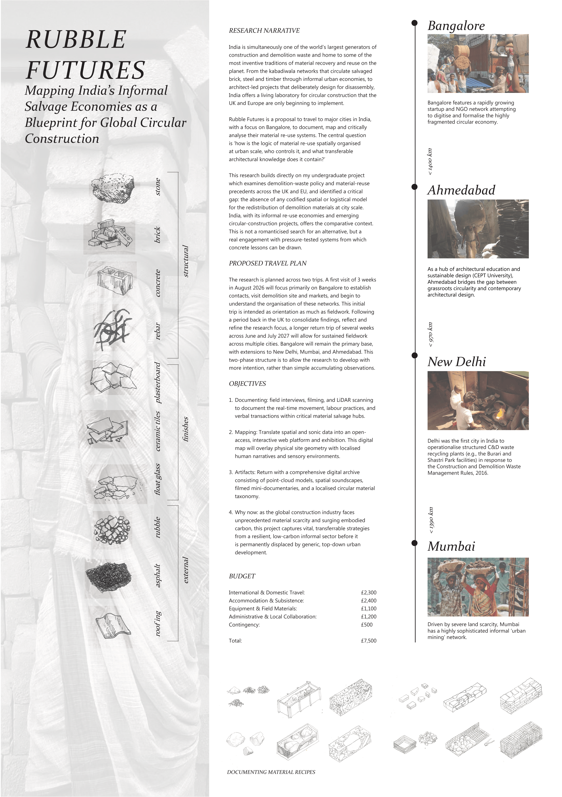

Scholarship findings and ongoing work.
This project has been selected as this year's winner for the RIBA Norman Foster Travelling Scholarship. It is a research project mapping how India's informal and formal material-reuse economies actually work, from salvage networks to architect-led circular construction. I'm an architecture student travelling to Bangalore and other Indian cities and my research asks how the logic of material reuse is organised spatially at city scale, who controls it, and what can architecture elsewhere actually learn from it? The work combines site documentation, interviews, and drawing - mapping both grassroots salvage networks and the architects, startups, and companies formalising circular construction in India.

A recurring theme in conversations with people working in municipal and NGO waste systems: the real comparison isn't the cost of processing demolition waste versus the cost of dumping it - it's monetary cost versus hidden cost. Flooded low-lying areas, silted lakes, stagnant water and the disease that follows rarely make it into anyone's spreadsheet.
One contact framed is simply: treating the symptom, not the disease. Formal waste economics almost never accounts for the value of the land, water, or public health it protects by NOT being dumped on. If this research has a central provocation, it could be here - what would it take to make that hidden cost visible enough for a policymaker to actually act on?
A worry that comes up often, including from people close to this research: that formalising an informal system is just a slower way of destroying it. Municipal takeover tends to push out the networks and livelihoods that built the system in the first place.
But it's not the only model. In Kerala, community-run collection groups (Kudumbashree self-help networks) do door-to-door waste collection while remaining formally linked into local governance structures than being absorbed into a top-down municipal system. It's not construction-waste specific, but it's a usefull counter-example: formal recognition and local constrol aren't necessarily opposites. Worth asking, in every city this research touches, whether anything like this exists here - and if not, why not.
A quiet but important split keeps showing up: large developers generally have their own waste processing already built in, simply because of scale. Everyone below that threshold - smaller developers, individual homeowners doing renovations - has no equivalent system, and defaults to whatever's fastest and cheapest, which usually means an informal tractor-load to the nearest vacant lot, lake bed, or flyover.
New national rules are starting to formalise this gap, but they're structured almost entirely around the large end - registration thresholds, recycled-content quotas - while the small end is asked simply to 'segregate and hand over' at best, with little built to make that easy. The formal/informal divide in this research isn't really about culture or tradition. It's mostly about scale.
One practice working with construction debris in walls and load-bearing structures made an observation worth sitting with: clients are incleasingly drawn to reclaimed old timber and debris-built walls not because they're cheaper, but because the material now carries a story. A house with a history becomes a kind of aesthetic statement, separate from its environmental cause.
That's not a criticism - it's a genuinely useful lever. But it raises a real question about scale: if reuse only spreads because it's fashionable to a certain kind of client, does the impact stay boutique by definition? The same practice argues that real impact comes from standardising a system - a wall type, a module, a technique - rather than a one-off 'statement' building. Worth tracking whether the story-driven and system-driven versions of reuse can actually coexist, or pull in opposite directions.
A pattern raised in conversation with Shamita from The Malba Project deserves more attention than it gets: the story of construction waste in major metros is well documented, but the smaller towns that ring them - the places where a lot of the waste actually ends up - are close to invisible in the research and reporting. She described a nearby smaller city (Thane) becoming, in their words, a 'receptacle' for a much larger city's (Mumabi) waste, with local bodies picking up the fines and consequences for dumping that didn't originate there.
It reframes a question this research keeps returning to: who controls the mateiral, and at what scale? The answer might not sit inside the big city at all - it might sit just outside it, in a place with far less power to say no.
← Back to homeLooking to connect with architects, researchers, NGOs, and material-recovery businesses working in this space. If that's you, or you know someone who fits, I'd love an introduction.